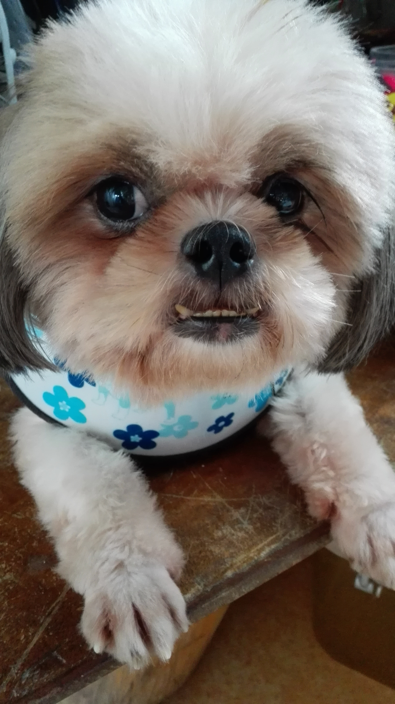
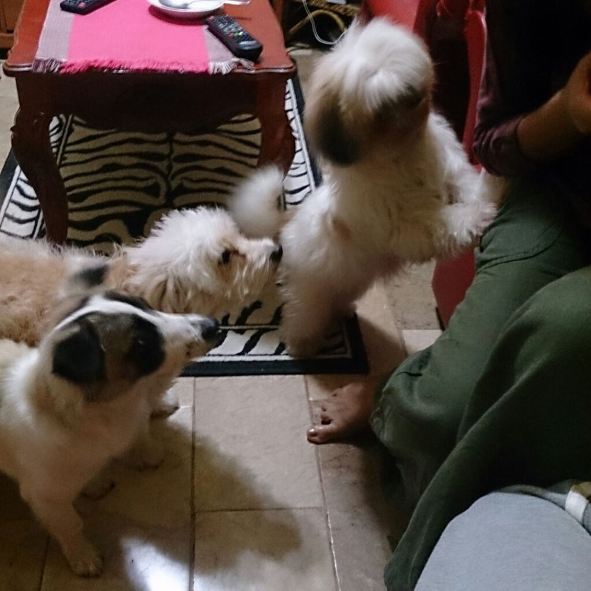

My Pet Dogs
Ella, Psychie, and Nunu are the names of my dogs. They bring life in the house and also cause nuisance, but I still love them.Ella is the first dog that stayed in the house the longest, her previous owners always kept her in a cage whenever they travel which is a lot. So the owner decided to give away the dog because it's sad to see her always left alone. She also trained not to urinate and poop on the house, which is nice for our first dog. But later on she is always getting pregnant, what a BITCH! that is what they call a female dog. Psychie is a female Shi Tzu, she was meant to be picked up by the buyer of the dog but decided not to get it; in return we added a new member of our family. She is a lazy dog but she will get hype if you play with her, and she is very photogenic in fornt of a camera.
Nunu is the only male dog we have in the house, he is the guard of the front gate. He is the youngest son Ella, our first dog. He feeds from affection of the owner, he gets jealous quickly if you don't interact with him first. The name Nunu, was given by my oldest sister because Nunu has small legs, which made him a "Unanu" which means dwarf. I love my dogs and they bring happiness to us, yet they won't be there longer than us but they will be remembered when we grow up
- 
- 